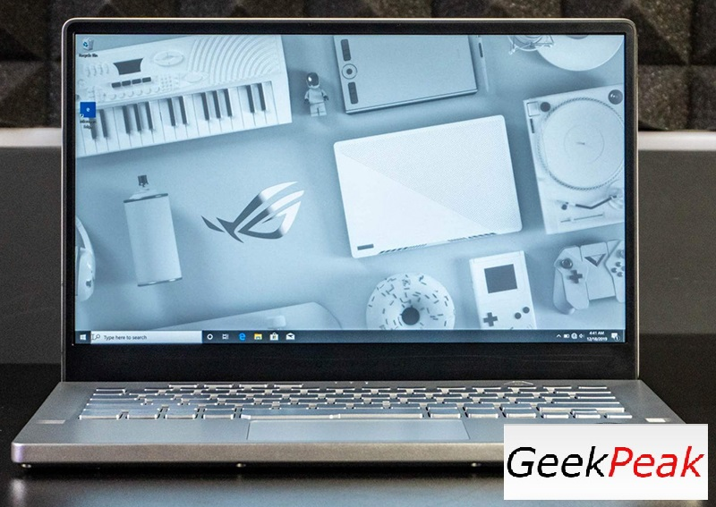
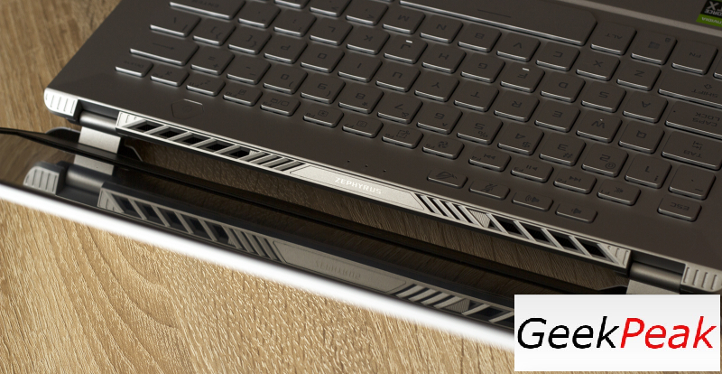
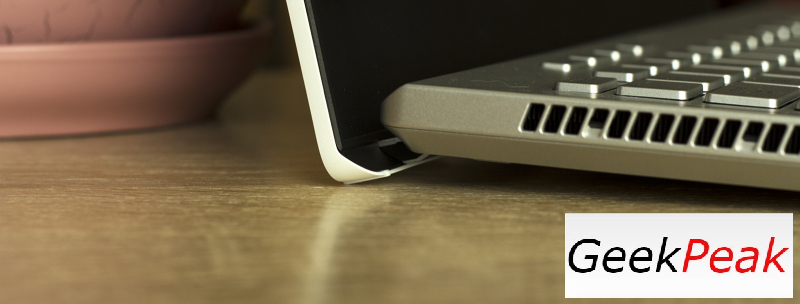
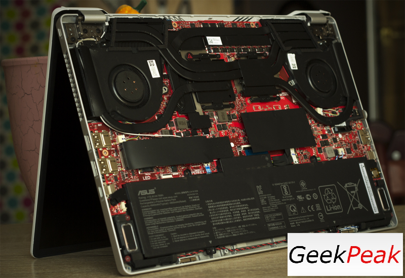

Обзор игрового ноутбука ASUS ROG Zephyrus G14 GA401IV
Малые размеры не есть беда!
Изюминка ROG Zephyrus G14 — в его компактности. Инженерам ASUS удалось создать небольшой игровой ноутбук толщиной менее 2 см и массой не более 1,6 кг. При этом Zephyrus G14 оснащен мощным 8-ядерным процессором AMD Ryzen 9 4900HS и мобильной графикой NVIDIA GeForce RTX 2060
Почти месяц назад на нашем сайте вышел обзор игрового ноутбука ASUS TUF Gaming A15, в котором использовался 8-ядерный Ryzen 7 4800H. Тестирование показало, что мобильные чипы Zen 2 однозначно удались, и теперь на рынке мобильных компьютеров воцарилась долгожданная конкуренция. На этот же раз к нам в цепкие лапы попала модель ROG Zephyrus G14, в которой установлен Ryzen 9 4900HS. Процессор мощный, и он помещен в компактный корпус 14-дюймового ноутбука. И это — главная афиша сегодняшнего обзора, хотя ROG Zephyrus G14 обладает и другими интересными особенностями.
Технические характеристики, комплектация и ПО
Тайваньцы явно делают серьезную ставку на ROG Zephyrus G14, потому что в продаже вы встретите много разновидностей этого лэптопа. У нас на тесте побывала модель GA401IV, но будут версии под номерами GA401IU, GA401II и GA401IH. Характеристики всех компактных «Зефиров» приведены в таблице ниже.
| ASUS ROG Zephyrus G14 | |
|---|---|
| Дисплей |
14" WQHD (2560 × 1440) IPS, 60 Гц, 100 % sRGB, Pantone Validated, адаптивная синхронизация, матовый 14" Full HD (1920 × 1080) IPS, 120 Гц, 100 % sRGB, Pantone Validated, адаптивная синхронизация, матовый 14" Full HD (1920 × 1080) IPS, 60 Гц, 100 % sRGB, Pantone Validated, матовый |
| Центральный процессор |
AMD Ryzen 9 4900HS или AMD Ryzen 7 4800HS — в GA401IV и GA401IU AMD Ryzen 7 4800HS или AMD Ryzen 5 4600HS — в GA401II и GA401IH |
| Видеокарта |
NVIDIA GeForce RTX 2060 Max-Q — в GA401IV NVIDIA GeForce GTX 1660 Ti — в GA401IU NVIDIA GeForce GTX 1650 Ti — в GA401II NVIDIA GeForce GTX 1650 — в GA401IH |
| Оперативная память | До 32 Гбайт, DDR4-3200 |
| Установка накопителей | 1 × M.2 в режиме PCI Express x4 3.0 или SATA 6 Гбит/с, 512 Гбайт или 1 Тбайт |
| Оптический привод | Нет |
| Интерфейсы 2 × USB 3.2 Gen2 Type-C |
2 × USB 3.2 Gen1 Type-A 1 × USB 3.1 Gen1 Type-А 1 × 3,5-мм мини-джек 1 × HDMI |
| Встроенный аккумулятор | 76 Вт⋅ч |
| Внешний блок питания |
180 Вт 65 Вт (опционально) Поддержка USB Power Delivery 3.0 — есть |
| Размеры |
324 × 222 × 19,9 мм — с AniMe Matrix 324 × 222 × 17,9 мм — без AniMe Matrix |
| Масса ноутбука |
1,7 кг — с AniMe Matrix 1,6 кг — без AniMe Matrix |
| Операционная система |
Windows 10 Home Windows 10 Pro |
| Гарантия | 2 года |
Обозреваемая модель, помимо Ryzen 9 4900HS и GeForce RTX 2060, оснащена 16 Гбайт оперативной памяти стандарта DDR4-3200 и твердотельным накопителем на 1 Тбайт. К сожалению, на момент написания статьи ни одного ROG Zephyrus G14 в продаже в России не нашлось — согласно заявлениям ASUS, они появятся в продаже в начале июня.
Все компактные «Зефиры», базирующиеся на платформе AMD, оснащены беспроводным модулем Intel Wi-Fi 6 AX200, который поддерживает стандарты IEEE 802.11b/g/n/ac/ax с частотой 2,4 и 5 ГГц и пропускной способностью 2,4 Гбит/с, а также Bluetooth 5.1.
В комплекте с лэптопом отыскался только внешний блок питания мощностью 180 Вт. Адаптер заметно постройнел и весит всего 300 граммов. Отмечу, что ноутбук поддерживает технологию USB Power Delivery 3.0, поэтому к нему можно докупить компактную зарядку мощностью 65 Вт.
Внешний вид и устройства ввода
Белый игровой лэптоп в 2020 году выглядит как минимум оригинально. Правда, белая в ROG Zephyrus G14 только крышка, остальная часть получила матовое серебристое оформление. Корпус выполнен из сплава магния с алюминием — в том числе и поэтому ноутбук весит так мало. К сборке у меня претензий нет: крышка и область с клавиатурой не прогибаются. Было бы странно видеть иное, ведь мы имеем дело с устройством из элитной серии ROG, да еще и компактным. И да, в продаже вы встретите и темно-серую версию лэптопа — назовем ее классической.
Главной дизайнерской фишкой ROG Zephyrus G14 стал матричный дисплей AniMe Matrix. Дело в том, что крышка лэптопа насчитывает 6536 отверстий. Помимо визуального сопровождения воспроизводимой музыки, дисплей может отображать пользовательские изображения и простенькие анимационные ролики. Производитель утверждает, что последующие обновления ПО позволят выводить на AniMe Matrix различные сообщения, например об уровне заряда батареи и так далее.
Поддержка AniMe Matrix — опциональная, и если вы внимательно изучили таблицу с характеристиками, то знаете, что ее использование увеличивает массу и толщину ноутбука — чуть-чуть, но все же увеличивает. Лично я — 32-летний дядя — в любом случае выбрал бы версию ROG Zephyrus G14 без этого дисплея, хотя, полагаю, молодежь наличие AniMe Matrix оценит. К нам в тестлаб приехала как раз версия без матричного экрана.
Версия без AniMe Matrix имеет толщину всего 18 мм, а масса устройства составляет небольшие по меркам игровых ноутбуков 1,6 кг. Крышка лэптопа получила весьма тугие шарниры — она открывается одной рукой, но с большим усилием. При этом максимальный угол раскрытия составляет примерно 145 градусов.
Интересно, что некоторые конструкторские элементы ROG Zephyrus G14 взяты из ультрабучной серии ZenBook. Так, при открытии крышки основание приподнимается на несколько градусов — этот трюк обеспечивает больший комфорт для пользователя и создает дополнительное пространство для циркуляции воздуха вокруг нижней панели корпуса. Если, конечно, ноутбук стоит на твердой поверхности.

Все интерфейсы в ROG Zephyrus G14 расположены по бокам. Слева вы найдете разъем для подключения блока питания, HDMI-выход, 3,5-мм мини-джек и USB 3.2 Gen2 C-типа. Последний порт совместим с DisplayPort и поддерживает технологию USB Power Delivery 3.0.
Справа у ноутбука есть два USB 3.2 Gen1 А-типа и еще один USB 3.2 Gen2 C-типа.
Клавиатура ROG Zephyrus G14 практически полностью копирует HID, используемый в ROG Zephyrus M. За одним исключением: герой обзора из-за еще более скромных габаритов лишился кнопок PgUp, PgDn, End и второй клавиши Fn — полагаю, этот момент устроит не всех пользователей.
Нажатие каждой кнопки на клавиатуре обрабатывается независимо от остальных — можно зажать сколько угодно клавиш за раз. При этом срабатывание кнопки происходит задолго до ее полного нажатия — где-то на половине хода, который, по моим прикидкам, равен примерно 1,8 мм.
У героя обзора большие кнопки Shift, которые часто используются в шутерах. Клавиша Print Screen расположена в непривычном месте. А еще неудобно пользоваться кнопками со стрелками — они в ноутбуках ASUS традиционно микроскопические.
Кнопка включения расположена там, где и должна быть, — в стороне от остальных клавиш. В нее встроен сенсор отпечатков пальцев, позволяющий быстрее логиниться в систему при использовании функции Windows Hello. Еще четыре клавиши вынесены отдельно от основной клавиатуры: с их помощью регулируется громкость динамиков, а также включается и отключается встроенный микрофон. При нажатии на кнопку с логотипом бренда открывается приложение Armoury Crate. Клавиша с изображением вентилятора активирует различные профили работы системы охлаждения ноутбука: Silent, Performance и Turbo.
Клавиатура получила одноцветную подсветку, для которой можно выбрать один из трех уровней яркости. В дневное время суток подсветка сливается с клавишами, если выбран любой уровень яркости, кроме самого высокого.
Что касается тачпада, то к нему у меня претензий нет, не считая его маркости. Сенсорная поверхность оказывается приятно-скользкой, распознает несколько одновременных касаний и, как следствие, поддерживает управление жестами.
А еще ROG Zephyrus G14 не имеет встроенной веб-камеры. Внешней «вебки» в комплекте с ноутбуком тоже не было.
Внутреннее устройство и возможности апгрейда
Ноутбук просто разбирается, но для доступа к сменным комплектующим придется снять металлическое днище целиком. Для этого потребуется открутить 14 винтов.
Система охлаждения ROG Zephyrus G14 насчитывает 5 теплотрубок и два вентилятора тангенциального типа. Вообще, у меня складывается впечатление, что в основе тестового образца лежит та же платформа, что и в ROG Zephyrus M, — уж очень у этих лэптопов похожи материнские платы и кулер. Часть теплотрубок охлаждает чипы, а часть — конвертеры питания.
Матплата ROG Zephyrus G14 имеет всего один слот SO-DIMM. В нашем случае в него установлен 8-гигабайтный модуль Micron. Всего же лэптоп оснащен 16 Гбайт ОЗУ стандарта DDR4-3200, которая работает в двухканальном режиме. В версиях «Зефира» с 32 Гбайт оперативной памяти, насколько я понимаю, распаяно сразу 16 Гбайт. Выходит, со временем мы можем установить вместо имеющегося модуля Micron другой, вдвое большего объема. В таком случае подсистема оперативной памяти тестовой модели максимально поддерживает 24 Гбайт. Модулей SO-DIMM DDR4-3200 объемом больше 16 Гбайт я в продаже не видел.
В единственный порт M.2 установлен твердотельный накопитель Intel SSDPEKNW010ТB объемом 1 Тбайт. Если вам потребуется увеличить дисковое пространство ноутбука, то придется менять SSD, например на 2-терабайтную версию.
Обозревал для вас, Господин Дудец